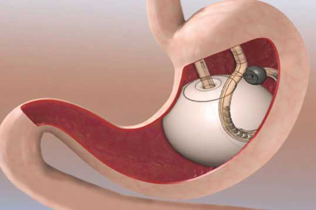

Gastric Balloon Insertion (အစာအိမ်တွင်း ပူဖောင်းထည့်ခြင်း)

အဓိပ္ပါယ်ဖွင့်ဆိုချက်
အစာအိမ်တွင်း ပူဖောင်းထည့်ခြင်းဆိုတာ ဘာလဲ
အစာအိမ်တွင်း ပူဖောင်းထည့်ခြင်းဆိုတာဟာ ကိုယ်အလေးချိန်လျှော့ချဖို့ ရေရှည်အထောက်အကူပြုတဲ့ နည်းလမ်းတခု ဖြစ်ပါတယ်။ အစားလျှော့စားခြင်း၊ စားသောက်မှုပုံစံပြောင်းလဲခြင်းနဲ့ ပုံမှန်လေ့ကျင့်ခန်း လုပ်ခြင်းဟာ ကိုယ်အလေးချိန်ကျဖို့ မတတ်နိုင်တဲ့အခါ ဒီနည်းကို အသုံးပြုပါတယ်။
အစာအိမ်ထဲထည့်တဲ့ ပူဖောင်းကို ဆီလီကွန်နဲ့ ပြုလုပ်ထားပြီး လေဖြည့်ထားပါတယ်။ ဒီလိုလုပ်ခြင်းအားဖြင့် အစာနည်းနည်းစားရုံနဲ့ ဗိုက်ပြည့်လာစေပါတယ်။
ဒီနည်းဟာ ယာယီနည်းမျှသာ ဖြစ်ပါတယ်။ ပူဖောင်းကို ၆လလောက်ကြာပြီးချိန်မှာ ဖယ်ထုတ်ရပါတယ်။ ဒါကြောင့် ခွဲစိတ်တဲ့နည်းလမ်းနဲ့ အဆင်မပြေမှ ဒီနည်းလမ်းကို သုံးပါတယ်။
ဒီနည်းလမ်းအပြင် တခြားနည်းတွေ ရှိပါသေးတယ်။ အစားလျှော့ခြင်း၊ စားသောက်မှုပုံစံပြောင်းခြင်း၊ လေ့ကျင့်ခန်းပိုလုပ်ခြင်း စတဲ့ ရိုးရှင်းတဲ့ နည်းလမ်းတွေ လုပ်ဆောင်နိုင်ပါတယ်။ တခါတရံ ဆရာဝန်ဟာ သောက်ဆေးတွေ ပေးပါလိမ့်မယ်။ ပူဖောင်းထည့်ခြင်းကို အစားထိုးနိုင်တဲ့ တခြားခွဲစိတ်မှုတွေကတော့ အစာလမ်းကြောင်း တိုစေခြင်း၊ အစာအိမ်ဖြတ်ခြင်း၊ အစာအိမ်ကျော်ဆက်ခြင်း စတဲ့နည်းတွေ လုပ်ဆောင်နိုင်ပါတယ်။
ဆီလီကွန်ဟာ ဘေးကင်းသလားဆိုတာ လေ့လာချက်များ ပြုလုပ်ထားပါတယ်။ အစာအိမ်တွင်း ပူဖောင်းထည့်ထားသူတွေဟာ တခြားရောဂါ ဖြစ်နိုင်ခြေတွေ (ဥပမာ ကင်ဆာ၊ အဆစ်ရောင်ခြင်း) ရှိမရှိတော့ အထောက်အထား မရှိပါဘူး။
အခြေခံအကြောင်းရင်းကို သိရှိခြင်း
အစာအိမ်တွင်း ပူဖောင်းထည့်ခြင်း ဘာကြောင့် ပြုလုပ်သလဲ
သင့်ရဲ့ BMI ဟာ ၄၀ကျော်နေရင် ဒီခွဲစိတ်မှု လုပ်သင့်ပါတယ်။ ကိုယ်အလေးချိန်ကို ရေရှည်ထိန်းသိမ်းပေးနိုင်ပါတယ်။ BMI ဟာ ၃၅ ကျော်ပြီး ဆီးချိုအမျိုးအစား (၂) နဲ့ သွေးတိုးလိုမျီုး ကျန်းမာရေးပြသနာတွေရှိနေရင် ဒီနည်းလမ်းကို လုပ်ဆောင်နိုင်ပါတယ်။
အစာအိမ်အတွင်းမှာ ပူဖောင်းကို ၉လထိ ထားနိုင်ပါတယ်။ ဒါကြောင့် တခြားခွဲစိတ်မှုတွေနဲ့ အဆင်မပြေချိန်မှာ ယာယီနည်းလမ်းတခုအနေနဲ့ အသုံးပြုနိုင်ပါတယ်။
ရေရှည်ကိုယ်အလေးချိန်လျှော့ချနိုင်ရင် အဝလွန်ခြင်းနဲ့ ပတ်သက်တဲ့ ကျန်းမာရေးပြသနာတွေအတွက် ဖြေရှင်းပေးနိုင်ပါတယ်။
ဖြစ်နိုင်ခြေအန္တရာယ်များ
မှန်ပြောင်းမှတဆင့် အစာအိမ်ကွင်းစည်းခြင်းပြုလုပ်တဲ့အခါ ဖြစ်နိုင်ခြေအန္တရာယ်တွေက ဘာတွေလဲ
အစာအိမ်တွင်း ပူဖောင်းထည့်ခြင်းဟာ ဘေးကင်းတဲ့နည်းလမ်းတခုဖြစ်ပြီး နောက်ဆက်တွဲ ပြသနာတွေ ဖြစ်နိုင်ခြေနည်းပါတယ်။ ဖြစ်နိုင်ခြေတွေကတော့
အိပ်ဆေး၏ နောက်ဆက်တွဲပြသနာ
သွေးထွက်ခြင်း
အစာအိမ်ပေါက်ခြင်း
အိပ်ဆေးပေးခြင်းဟာ ဘေးကင်းတတ်ပေမယ့် ပျို့အန်ခြင်း၊ ဆေးထိုးသည့်နေရာ ပူလောင်ခြင်းတို့ကို ဖြစ်စေခြင်း
အစာတချို့ဟာ အဆုတ်ထဲကို ဝင်နိုင်ပြီး ပိုးဝင်ခြင်း
နှလုံးခုန်မမှန်ခြင်း
အသက်ရှူခက်ခြင်း
ခွဲစိတ်မှုမခံယူခင်မှာ ဖြစ်နိုင်ခြေအန္တရာယ်တွေနဲ့ နောက်ဆက်တွဲပြသနာတွေကို သိထားသင့်ပါတယ်။ သိလိုတာတွေရှိရင် ဆရာဝန်နဲ့ တိုင်ပင်နိုင်ပါတယ်။
ကြိုတင်ပြင်ဆင်ခြင်း
မှန်ပြောင်းမှတဆင့် အစာအိမ်ကွင်းစည်းခြင်းကို မပြုလုပ်မီ ဘာတွေပြင်ထားရမလဲ
သင့်အနေနဲ့ မကြာသေးမီက ဘာဆေးတွေ သောက်နေသလဲ၊ ဓါတ်မတည့်ခြင်း ဘာရှိလဲ၊ လက်ရှိ ကျန်းမာရေး အခြေအနေ စတဲ့ကိစ္စတွေကို ဆရာဝန်နဲ့ ဆွေးနွေးရပါမယ်။ မခွဲစိတ်ခင်မှာ မေ့ဆေးဆရာဝန်နဲ့ တွေ့ဆုံပြီး တိုင်ပင်နိုင်ပါတယ်။ မခွဲစိတ်ခင် ဘယ်ချိန်မှာ စားသောက်ခြင်းကို ရပ်တန့်ရမယ်ဆိုတဲ့ ညွှန်ကြားချက်တွေကို လိုက်နာဖို့ အရေးကြီးပါတယ်။ ညွှန်ကြားချက်တွေကို ရှင်းလင်းစွာ သိရှိသင့်ပါတယ်။
ရောဂါအဖြေရှာခြင်း နှင့် ကုသခြင်း
အစာအိမ်တွင်း ပူဖောင်းထည့်ခြင်းပြုလုပ်နေစဉ် ဘာဖြစ်နိုင်လဲ
ခွဲစိတ်မှုဟာ မိနစ်၂၀ကနေ တနာရီထိ ကြာနိုင်ပါတယ်။
သင့်တော်တဲ့ မေ့ဆေးထုံဆေး တမျိုးမျိုးပေးပြီး ခွဲပါလိမ့်မယ်။
ခွဲစိတ်ဆရာဝန်ဟာ မှန်ဘီလူးတခုကို လည်ချောင်းထဲကဆင့် အစာအိမ်ထဲကို ထည့်သွင်းပါလိမ့်မယ်။ မှန်ဘီလူးမှတဆင့် ကြည့်ရှုပြီး မဖောင်းသေးတဲ့ပူဖောင်းကို ထည့်သွင်းပါလိမ့်မယ်။
ပူဖောင်းကို ပြွန်တခုနဲ့ ဆက်သွယ်ထားပြီး အဲဒီပြွန်ကတဆင့် လေ ဒါမှမဟုတ် ဆလိုင်းအရည် တခုခုသွင်းပြီး ပူဖောင်းကို ဖောင်းစေပါလိမ့်မယ်။
သိလိုတဲ့အချက်တွေရှိရင် စိုးရိမ်ပူပန်မှုတွေရှိရင် ပိုသိရအောင် သင့်ရဲ့ခွဲစိတ်ဆရာဝန်နဲ့ တိုင်ပင်ပါ။
ပြန်လည်သက်သာလာခြင်း
ခွဲစိတ်ပြီး ဘာတွေဖြစ်နိုင်သလဲ
နောက်တနေ့မှာဖြစ်ဖြစ် ခွဲတဲ့နေ့မှာဖြစ်ဖြစ် အိမ်ပြန်နိုင်ပါတယ်။
ရက်သတ္တပတ်အနည်းငယ်လောက် အရည်ပဲ သောက်ရပါမယ်။ ပြီးမှသာ အစာပျော့ပျော့ စားရပါမယ်။ တပတ် နှစ်ပတ်လောက်ကြာပြီးချိန်မှာ ပုံမှန်အစာစားနိုင်ပါတယ်။
ခွဲစိတ်ခဲ့ရတဲ့ အခြေအနေပေါ်၊ အလုပ်သဘောသဘာဝပေါ် မူတည်ပြီး တရက်၂ရက် ကြာပြီးချိန်မှာ အလုပ်ပြန်ဆင်းနိုင်ပါတယ်။
လေ့ကျင့်ခန်း ပုံမှန်လုပ်ခြင်းဟာ ပုံမှန်လှုပ်၇ှား သွားလာနိုင်တဲ့ အနေအထားကို မြန်မြန် ရောက်နိုင်ပါတယ်။ လေ့ကျင့်ခန်းမလုပ်ခင်မှာ ဆရာဝန်နဲ့ တိုင်ပင်ပါ။
၆လကနေ ၉လလောက်ကြာပြီးချိန်မှာ ပူဖောင်းကို ဖယ်ရှားပါလိမ့်မယ်။ မှန်ပြောင်းကြည့်ဖို့ လိုပါတယ်။
ယေဘုယျအားဖြင့် ဒီနည်းနဲ့ကုသထားသူတွေဟာ ကိုယ်ခန္ဓါအလေးချိန် သုံးပုံတပုံကျော်ကျော် ကျသွားတတ်ပါတယ်။
Source- Dr.Thant Zin